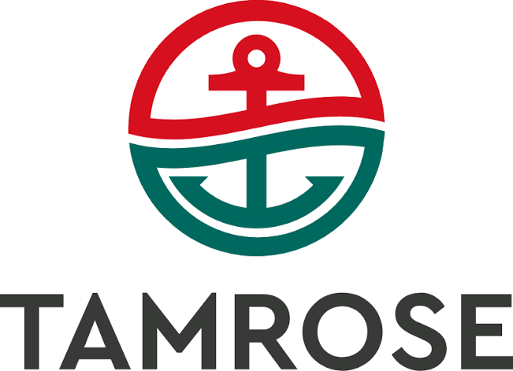

Digital Communications
Driving digital engagement for a multi-city technology platform
A two-month, two-city digital campaign that sustained visibility across five programmes and carried the conversation beyond the event floor.
Read the storyA fleet expansion and a fully repaid USD 10 million facility, reframed from corporate announcement into a proof point for Nigerian local content.
Client
Tamrose Limited

Between 2019 and 2025, Tamrose Limited expanded its marine logistics fleet from four vessels to fifteen and fully repaid a USD 10 million Nigerian Content Intervention Fund facility obtained through NCDMB. The communications opportunity was to move this achievement beyond a corporate announcement and show what it represented for indigenous capacity, governance and local content development in Nigeria's offshore oil and gas sector.
SKOT developed a strategic event and media campaign that positioned the repayment milestone as an industry proof point, rather than simply a corporate celebration.
The campaign brought regulators, government stakeholders, investors, partners and media together around the achievement. Narrative development, executive positioning and spokesperson preparation connected Tamrose's growth to governance, accountability and the potential impact of local content funding.
National media outreach, broadcast engagement, front-page placements, documentary storytelling and visual content extended the story beyond the event and into wider industry coverage.
Coverage across national print, online and broadcast platforms increased visibility for Tamrose's milestone. Front-page placements across major business and national newspapers strengthened the profile of the story, while the campaign contributed to wider media discussion about local content effectiveness, indigenous participation and long-term value-chain development.
SKOT turned a corporate repayment milestone into a broader story about indigenous capability, governance and local content in Nigeria's offshore sector.
Next
A two-month, two-city digital campaign that sustained visibility across five programmes and carried the conversation beyond the event floor.
Read the story
Launching the inaugural Nigeria Leadership Dialogue from a standing start — no established press relationships, a crowded conference landscape.
Read the storyGet in touch